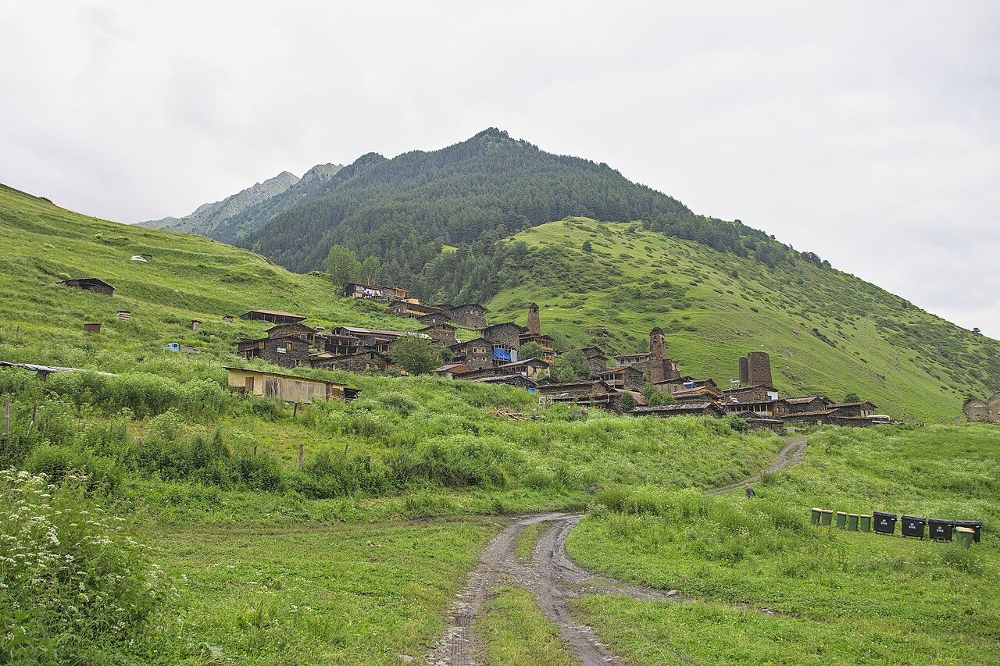
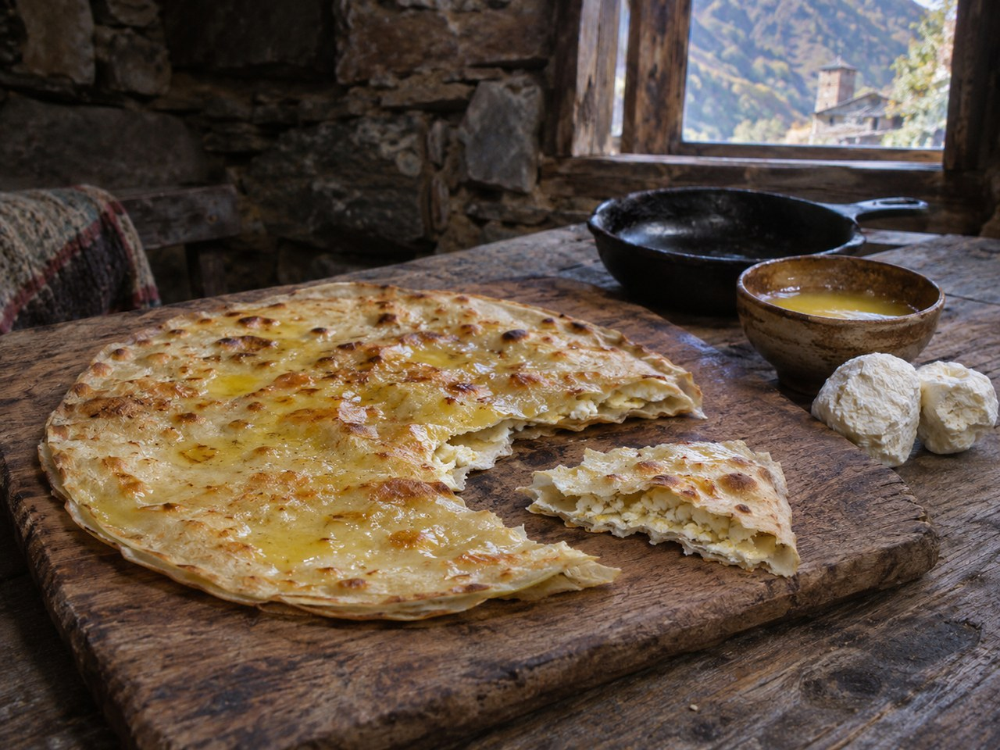

Последняя машина

Тесто не трогайте, оно отдыхает. Ему ещё полчаса лежать под полотенцем, а потом я его раскатаю так тонко, что через него можно будет читать вашу записную книжку. Это не я придумала, так говорила моя мать. Она, правда, читать не умела, но тесто раскатывала лучше всех в Пирикита. Садитесь ближе к печке, у нас в конце сентября по вечерам уже не лето, вы сами чувствуете.
Зура сказал, вы завтра едете вниз с ним. В семь утра, сказал? Значит, в восемь. У Зуры семь утра наступает около восьми, это все знают, даже коровы. Он говорит, это последняя машина. Может, ещё одна будет, если снег не пойдёт. Он так каждый год говорит, и каждый год потом приезжает ещё раз, то за чьим-то ружьём, то за чьей-то бабушкой. Но по-настоящему последняя машина всё равно бывает. Однажды утром она уходит, а через неделю ложится снег на Абано, и всё. До весны дорога наша, и больше ничья.
Абано — это перевал. Вы через него ехали и, я вижу по лицу, до сих пор едете. Почти три тысячи метров, и дорога такая, что лучше её проезжать с закрытыми глазами, только не тому, кто за рулём. Её каждую весну расчищают от камней, а каждую осень она опять наша.
Я вам сейчас расскажу, а вы пишите, только Иасэ не цитируйте, он этого не любит. Иасэ — мой муж. Он сейчас у соседей, носит им дрова. Мы с соседями помирились неделю назад, и он теперь каждый вечер ходит к ним доказывать, что помирились мы окончательно. Про соседей я потом расскажу, это отдельное кино.
Мне было лет четырнадцать, когда к нам пришла первая машина. До этого в Тушети ничего не приезжало, всё приходило. Соль приходила на лошадях, мука на лошадях, керосин на лошадях, невесты тоже на лошадях, только на лучших. Если кто-то заболел зимой, его не везли никуда, а лечили тем, что было, и молились. Если летом, везли вниз через перевал на носилках, четыре человека, по очереди. Мой дед так спускался с аппендицитом и потом говорил, что больше всего болел не живот, а уши, потому что всю дорогу несущие спорили, как правильно держать носилки.
И вот однажды летом мальчишки прибежали и закричали, что едет. Мы все побежали смотреть, и старики тоже, кто мог. Это был грузовик, зелёный, с брезентом. Он полз по серпантину так медленно, что мы успели его догнать, обогнать, вернуться домой за хлебом и снова прибежать. Шофёр вылез, весь белый от пыли, только глаза чёрные, и спросил, где тут можно напиться. Моя бабушка поднесла ему воды и сказала: «Сынок, ты как сюда попал?» Будто он с неба упал. А он ответил: «По дороге, мать». И все засмеялись, потому что слово «дорога» у нас тогда значило тропу для лошади, а не это.
Вместе с дорогой в Омало сделали библиотеку, медпункт и телеграф. Моя мать ходила смотреть на телеграф, как на икону. Говорила: всё, теперь Тушети на проводе. Ей казалось, что раз есть провод, то и мы теперь как все, как Телави, как Тбилиси. Она отправила одну телеграмму своей сестре в Алвани, всего три слова: «У нас телеграф». Сестра ответила: «Поздравляю». Больше они друг другу телеграмм не посылали, им и этого хватило на всю жизнь.
Смешное в этой истории то, что дорогу строили, чтобы горы жили. А по ней стало удобно уезжать. Раньше человек десять раз подумает, прежде чем спуститься в Алвани насовсем: перевал, лошади, вещи. А тут кинул мешки в кузов и поехал. Каждую осень вниз уходило машин больше, чем весной поднималось вверх. Я это видела своими глазами, я тогда считала. Не машины, а дома, в которых зимой горел свет. В детстве у нас в селе зимой светились почти все окна. Потом половина. Потом я перестала считать, потому что стало неинтересно.
Тушины всегда жили на две стороны: летом здесь, в горах, со скотом, а зимой внизу, в Алвани, в Кахети. Так было всегда, ещё при царях. Я не говорю, что это плохо. Внизу школа, больница, базар, внуки. Внизу тепло. Но кто-то же должен оставаться наверху. Хотя бы чтобы остальным весной было куда подниматься, если вы понимаете, что я имею в виду. Наверное, не понимаете. Ничего, Иасэ тоже не понимает, а живёт здесь сорок зим.
Иасэ вниз не поедет. Я его каждый год спрашиваю, для порядка. Он каждый год отвечает одно и то же: «Там я пенсионер, а здесь я хозяин». Я ему говорю: хозяин чего? Снега? А он говорит: снега тоже кто-то должен быть хозяином. Спорить с ним нельзя, он упрямый, как его отец, а отец его, говорят, однажды переупрямил медведя. Медведь ушёл, а отец остался сидеть на камне, потому что это был его камень.
Я остаюсь из-за калти. Это я так говорю. Калти — это наш творог, тушинский. Летом на стоянке, где пасут овец, делают сыр гуда, а из того, что остаётся от сыра, из сыворотки, делают калти. Сыворотку кипятят, откидывают в мешок, солят, катают шарики и сушат. Сухой калти лежит хоть год, хоть два. Раньше его брали с собой пастухи, охотники, солдаты. Сейчас внизу, на базаре в Телави или в Ахмете, за него просят такие деньги, что я, когда первый раз услышала, подумала, что продавщица ошиблась. Нет, не ошиблась. Так что калти надо стеречь. А кто будет стеречь, если не я?
На самом деле я остаюсь из-за Иасэ. Но ему не говорите.
В этом году калти делал он сам, на стоянке, всё лето. Вон в том мешке на гвозде, видите? Пахнет. Я сейчас из него сделаю котори. Котори — это наш хачапури, только он не такой, как в городе. Тесто без дрожжей, тонкое, как бумага, а внутри калти с топлёным маслом. Раньше его пекли только на праздники. Моя мать говорила: котори не для каждого дня, его пекут, когда есть за что. Я в детстве всё время спрашивала, за что сегодня. А она: «Подожди, узнаешь».
А теперь про соседей. Нас на зиму в селе остаётся две семьи. Мы и Бадри с Нинико, их дом выше по склону, у них самая большая поленница во всём Пирикита. В прошлом ноябре Иасэ взял у Бадри три полена. Взял, а не попросил, потому что Бадри ещё спал, а печку надо было топить. Бадри проснулся, пересчитал поленницу, он их считает, и обиделся. Иасэ сказал, что вернёт весной. Бадри сказал, что весной дрова не нужны. Иасэ сказал, что ему тоже не нужны дрова Бадри. И всё. Две семьи на всё село, и они не разговаривают.
Семь недель не разговаривали. Вы представляете, что такое семь недель зимой, когда кроме них никого? Снег по пояс, тишина такая, что слышно, как Нинико у себя наверху режет лук. А разговаривать нельзя. Я Иасэ говорю: иди, помирись. Он говорит: пусть Бадри первый. Нинико, я знаю, своему говорила то же самое. Два упрямых старика, а мы с Нинико между ними, как две кастрюли на одной печке.
Мирились мы через собаку. У Бадри есть собака, Мгела, большая, лохматая, она зимой ходит к нам, потому что у нас теплее, хоть Бадри этого и не признаёт. Однажды я привязала ей к ошейнику узелок с котори. Просто так, посмотреть, что будет. Мгела унесла наверх. На следующий день пришла обратно, а на ошейнике узелок, в нём шарик калти и записка рукой Нинико: «Калти у тебя пересолен». Я ответила тоже через собаку: «Зато котори у меня тоньше». Так мы и переписывались через Мгелу почти месяц. Мужчины делали вид, что ничего не знают. А потом Бадри сам пришёл к нам, сел к печке и сказал: «Иасэ, что ты сделал с моей собакой, она теперь ест только котори». И Иасэ ему налил. Вот так помирились. А три полена Иасэ ему всё-таки вернул, в мае, когда дрова уже не нужны. Бадри их взял и пересчитал.
Это было в позапрошлом году. В этом году они опять поссорились, из-за сена, и опять помирились неделю назад. Мгела уже сама приходит к нам, как на работу, и смотрит на ошейник.
Тесто, кажется, отдохнуло. Сейчас будем раскатывать.
А знаете, что изменилось больше всего? Не дорога. Интернет. Его провели в две тысячи семнадцатом году. Не государство само, а наши, тушины, собрали фонд и добились, вместе с министерством. До этого у нас зимой связи не было никакой. Если что-то случилось, ты узнаешь весной. Если у тебя что-то случилось, внизу тоже узнают весной. Я однажды так узнала, что у меня родилась внучка, в апреле, а она родилась в декабре. Четыре месяца у меня была внучка, а я не знала.
А в ту зиму, когда провели интернет, внук привёз мне планшет. Показал, куда нажимать. Я сказала, что ничего не умею, и что глаза у меня уже не те. И вот в январе, в самый снег, он зазвонил. И там они все. Дочь, зять, внуки, та самая внучка, которой уже было лет десять. Сидят в Алвани на кухне и машут. А внучка говорит: «Бебо, а мы тебя зимой никогда не видели». Я говорю: я зимой такая же, как летом, только в платке. А она говорит: «Нет, другая». Я потом весь вечер смотрела в зеркало, какая я другая. Не нашла.
На второй месяц внучка попросила, чтобы я её научила котори. Она в Тбилиси учится, и там у неё подружки, и все они думают, что котори продают в пекарне. Я ей сказала: давай. И вот я стою у себя на кухне с тестом перед планшетом, а она у себя в Тбилиси, в общежитии, тоже с тестом. И я ей показываю: вот так, ладонью, от середины. А она: «Бебо, я тебя не вижу, ты ушла из кадра». Я ушла из кадра. Иасэ сидит рядом, держит планшет, чтобы он стоял, и командует: левее, правее. Как в телевизоре, честное слово. Полчаса мы так стояли. У неё получилось толсто, как подошва. Я ей сказала: ничего, у меня в первый раз тоже было как подошва, а у твоей прабабушки нет, у неё сразу было тонко, но она была особенная. Через неделю внучка прислала фотографию: тонко. Не как у прабабушки, но тонко. Я эту фотографию показала Нинико, через Мгелу, конечно.
Теперь у меня зимой каждый вечер гости. Не в доме, в планшете, но гости. Иасэ ворчит, что раньше зимой было тихо. А сам первый спрашивает: «Звонили?»
Вот, смотрите. Раскатываю. Тоньше, ещё тоньше. Не бойтесь, не порвётся, оно привыкшее. Теперь калти, щедро, калти жалеть нельзя, хоть он и дорогой. Закрываю, снова раскатываю, теперь на сковородку. Слышите, как пахнет? Потом топлёным маслом сверху, и всё.
Вы спрашиваете, за что сегодня котори. Я вам скажу, за что. Сегодня последний вечер, когда в селе ещё есть чужие люди. Завтра вы уедете с Зурой, туристы уехали вчера, дети уехали на прошлой неделе. Останемся мы, Бадри с Нинико и Мгела. И я каждый год в этот вечер пеку котори. Иасэ спрашивает: за что? А я говорю: за то, что все уехали, а мы остались. Это тоже праздник, если подумать. Не самый весёлый, но праздник.
Оставайтесь вы тоже, а? Я серьёзно. Места много, людей мало. Иасэ будет рад, ему не с кем спорить, кроме Бадри, а с Бадри он уже всё переспорил. А я бы вас учила по-тушински, по одному слову в день. Как раз до весны хватило бы, а весной вы бы уже говорили лучше Зуры. Нет? Я так и знала. Вы из тех, кто остаётся, но в другую сторону. Вы уехали оттуда и остались здесь, у нас, внизу. А мы с Иасэ остаёмся наверху. Получается, мы с вами одной породы, только разной высоты.
Держите, это вам. Котори, завёрнутый, в дороге съедите, на Абано, когда Зура остановится покурить, а он там всегда останавливается, у него там сердце. И вот ещё, шарик калти. Не смотрите так, он не портится. Положите в шкаф и забудьте. А зимой, когда будет совсем плохо, а будет обязательно, такая у зимы работа, достаньте, отломите кусочек и съешьте. И вспомните, что есть на свете два старика и собака, которые сидят наверху, у печки, и держат вам дорогу. До весны.
А утром я выйду на дорогу провожать. Я всегда выхожу. Буду стоять, пока машина не скроется за поворотом. Потом постою ещё, послушаю, как она гудит на серпантине, всё тише и тише. А когда станет совсем тихо, значит, дорога закрылась. Тогда я пойду домой ставить чайник. Иасэ к тому времени как раз проснётся и спросит: «Уехали?» А я скажу: «Уехали». И он скажет: «Ну, теперь начинается».

Котори
На 4 котори.
Тесто
мука пшеничная — 500 г
молоко — 250 мл
растительное масло — 50 мл
соль — ½ ч. л.
Начинка
калти — 500 г (или сухой жирный творог; можно наполовину с тёртым сыром гуда)
соль — 1 ч. л.
топлёное масло — 2 ст. л. в начинку и ещё 3–4 ст. л. для смазки
1. Калти или творог разомните и взбейте до однородности, уберите в холодильник на день-два, чтобы он вызрел.
2. Подогрейте молоко, растворите в нём соль. Понемногу всыпайте муку и вымешивайте тесто руками, смазанными маслом. Тесто пресное, без дрожжей. Накройте полотенцем и оставьте в тёплом месте на 30 минут.
3. Перед лепкой смешайте калти с солью и одной ложкой топлёного масла.
4. Разделите тесто на 4 шара. Каждый раскатайте как можно тоньше, положите в середину щедрую порцию начинки, соберите края над ней и защипните.
5. Снова раскатайте лепёшку, осторожно, чтобы начинка разошлась по всему кругу и тесто не порвалось.
6. Жарьте на разогретой сухой сковороде на среднем огне по 3–4 минуты с каждой стороны, до золотистых пятен.
7. Горячий котори сразу смажьте растопленным топлёным маслом.
Котори едят горячим, отламывая руками. Раньше в Тушети его пекли только на праздники, а калти для него делали летом на пастушьих стоянках, из сыворотки, оставшейся от сыра гуда.
Тбилиси, ноябрь 2026